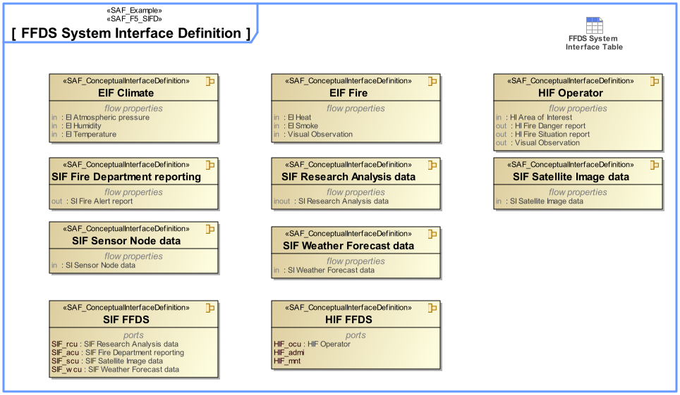

F5_SIFD System Interface Definition Viewpoint
| Domain | Aspect | Maturity |
|---|---|---|
| Functional | Interface |

The System Interface Definition Viewpoint captures system wide concepts defining interfaces. It allows to adopt long-lived standards and to harmonize conceptual interface definitions to improve interchangeability, interoperability, and portability.
The System Interface Definition Viewpoint supports the “prepare for system requirement definition” activity part of the “System Requirements Definition Process” activities of the INCOSE SYSTEMS ENGINEERING HANDBOOK 2023 [§2.3.5.3] and contributes to the artifact “System Requirements Definition Report”.
Furthermore, the viewpoint supports the “Interface Management” approach of the INCOSE SYSTEMS ENGINEERING HANDBOOK 2023 [§3.2.4].
A block definition diagram (BDD) featuring Conceptual Interface blocks with ports, and flow properties.
A tabular format listing Conceptual Interface blocks, their ports, and flow properties.
The following Stereotypes / Model Elements are used in the Viewpoint: